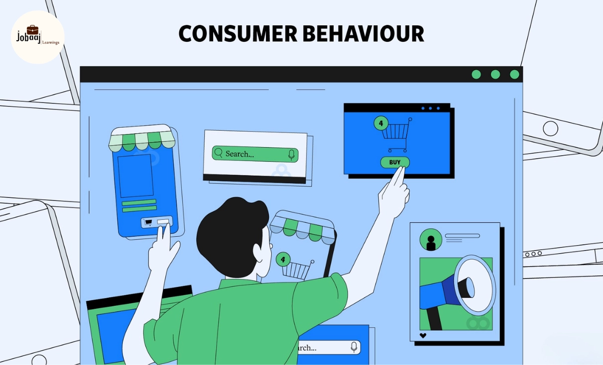

Featured • Retail Analytics
RETAIL • CUSTOMER • SEGMENTATION
Retail Customer Shopping & Segmentation Analytics
End-to-end retail customer analytics project using Python, SQL and Power BI to analyze shopping behavior, customer segments, purchasing patterns, products, discounts and commercial performance.
Python EDA
SQL Analysis
Power BI Dashboard